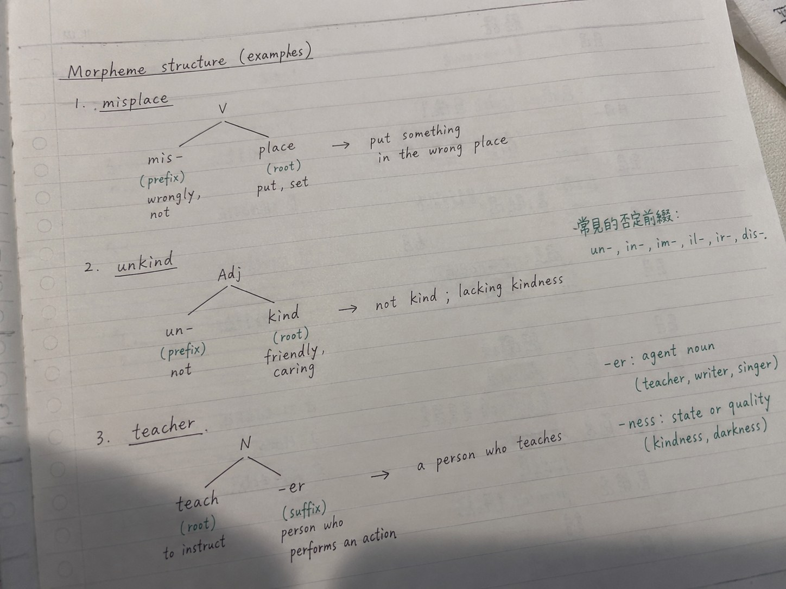

Morpheme Structure｜補充例句（掃描整理）
| 形式 | 一般功能 | 例子 |
|---|---|---|
| re- | again / back | rewrite, reread, rebuild |
| un- | not / reverse a state or action | unhappy, untie, unlock |
| mis- | wrongly / incorrectly / in the wrong place | misread, mislabel, misplace |
| -er | person or thing performing an action | teacher, writer |
| -ness | state or quality | kindness, darkness |
